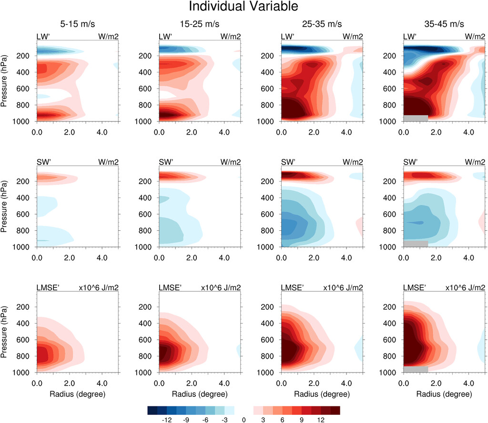

Radiation-Convection Interactions in the Development of Tropical Cyclones
Overview: This figure shows the track density in the Control run (with radiative interactions; left), the ClimRad run (without radiative interactions; middle) and their difference (right). Reduced TC frequency without radiative interactions
This figure shows Vertical cross sections of azimuthally averaged and density-weighted individual variables for the longwave radiation, shortwave radiatoin, and moist static energy during different TC intensities.
To examine the role of radiation-convection interactions in the development of TCs, mechanism denial experiments are conduected using a general circulation model.

This figure shows the track density in the Control run (with radiative interactions; left), the ClimRad run (without radiative interactions; middle) and their difference (right). TC frequency is reduced without radiative interactions.

Reduced TC lifetime without radiative interactions This figure compares TC duration (Control minus ClimRad). The blue (red) bars in each subplot indicate that there are more short-lived (fewer long-lived) TCs in the ClimRad run.
Reduced the degree of aggregation and extreme precipitation without radiative interactions This figure compares annual maximum precipitation between the Control and ClimRad runs.
Radiative feedbacks associated with the MJO
This study uses radiative kernels [Soden et al. (2008); Kramer et al. (2019)] to diagnose radiative feedbacks associated with the MJO. As an important driver of tropical intraseasonal variability, The MJO can be viewed as a kind of convective aggregation which involves interactions between clouds, circulation, radiation and water vapor. This work quantifies individual feedbacks (temperature, water vapor, surface albedo and clouds) asscociated with the MJO. This figure below shows maps of the atmospheric radiative feedbacks during different phases of the MJO: (a) Planck, (b) lapse rate, (c) water vapor, (d) cloud (units: W m-2) and (e) precipitation anomalies (units: mm day-1)